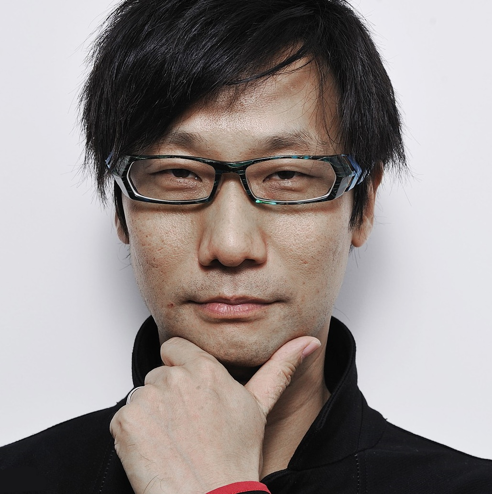

Hideo Kodjima
Game Designer at Kodjima Production
Résumé
«Hideo Kojima is the James Cameron of video games – a maverick auteur with very big ideas, a fetishistic love of technology and a constant need to push his chosen medium as far as it can possibly go, whatever the cost. Add to this an obsession with movies and the band New Order, and you have one of the most unique video game creators currently working today.»
Childhood & Early Life
- Kojima was born in Tokyo, Japan in 1963, but his family moved to western Japan shortly after his birth. Growing up as a latchkey kid, he had to deal with loneliness and loss as a child, when his father passed away while he was just 13 years old.
- From an early age, he knew that he wanted to be a writer and illustrator, but faced a lot of pressure to seek out a safer and financially stable line of work. Despite discouragement from his family and peers, as a teen, he wrote and illustrated original short stories and sent them to magazines, although none ever got published.
- While attending college and studying economics, Kojima spent a lot of his free time playing video games, which at the time was a new medium that hadn't been explored much.
- He shocked his peers by announcing in his fourth year of college that he wanted to design video games, even though his previous ambition had been to become a film director. Even though most of his friends discouraged him from pouring his energy into an untested creative outlet, he cites unwavering support from his mother as a big influence in his decision to pursue video games.
Career
- Kojima's early career was marked by a lot of rejection, and his video game ideas failed to gain any traction with publishers. In 1986 he was hired by the game publisher ‘Konami Digital Entertainment’ to work in their MSX home computer division as a designer and planner.
- Owing to the system's limited color palette and resources, the assignment was a bit of a disappointment to the creative and imaginative Kojima, who had hoped to work on the more colorful Nintendo system.
- Many of Kojima's early ideas were refused, but he got his big breakthrough when he was asked to take over a project called ‘Metal Gear’. He fixed problems with the game's clunky combat system by instead focusing the game play on sneaking and subterfuge.
- Released in 1987, the first ‘Metal Gear’ game introduced its tough protagonist ‘Solid Snake’ to the world, and the title remains one of Kojima's most recognizable and successful franchises.
- During the '90s Kojima's career finally took off and he began developing his own projects for the ‘Konami MSX2’ as well as for other gaming systems, including a sequel to his breakout hit ‘Metal Gear’.
- In 1998, the release of his PlayStation title ‘Metal Gear Solid’ brought him to the attention of industry insiders and fans alike and he became a celebrity in the video game world.
- He kicked of the '00s with a sequel to ‘MGS’ which was one of the most highly anticipated game releases ever at the time. He repeated his success in 2001 with the release of the video game and anime franchise ‘Zone of Enders’. By the end of the decade he had come up with several other projects, including several ‘MGS’ sequels and spinoffs.
- On April 1, 2011, Kojima was promoted to Vice President of ‘Konami Digital Entertainment’. This promotion was a step up from his previous title of Vice President of ‘Konami Computer Entertainment Japan’ and gave him almost unparalleled creative control over one of the most popular game publishers in the world.
Major Works
- Beginning with the release of the first iteration in 1986, the ‘Metal Gear’ franchise is Kojima's biggest and most recognizable contributions to the gaming world. The main character of the title, ‘Solid Snake’, has even made appearances in other video games like ‘Nintendo's Super Smash Bros Brawl’.
- Another major Kodjima's work was Death Stranding. Death Stranding, the newest video game from the developer Hideo Kojima, was introduced to the world in the summer of 2016 on a stage at the Electronic Entertainment Expo (E3), the gaming industry’s annual trade-show extravaganza. The event was what the industry calls a press conference, but this particular spectacle more closely resembled the scene in “King Kong” when the beast is displayed to the public in a Broadway theater. A live orchestra struck up a blaring John Williams-style score as the curtain lifted to reveal a sloping stage, at the very top of which stood Kojima, a slight Japanese man with swooping black hair and glasses. The floor began to light up underneath him, panes of light flying in from left and right to create a sort of light bridge, which he bounded down to shake a Sony executive’s hand. Then he stood at center stage, beaming, to deafening applause.
Awards & Achievements
- In 2009 the entertainment website IGN named him number six in their list of top game creators of all time. That year he also received a ‘Lifetime Achievement Award’ at the ‘Game Developers Conference’.
Personal Life & Legacy
- Kojima is unmarried and has no children, but continues to enjoy the support of his mother. She even plays his video games, and it is believed she took an entire year to finish ‘MGS3’.
Net Worth
- Hideo Kojima is considered to be one of the most influential game designers of all time. His net worth is currently estimated around $30 million.
Languages
Skills
Likes 😃
Dislikes 😞
Wants
Some characters created by me
Big Boss

The Boss

Eva (Metal Gear Solid)

Solid Snake